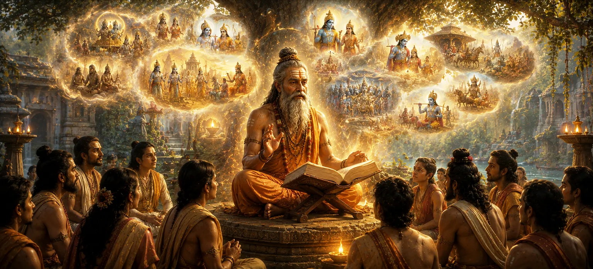

पुराणों की महिमा
व्यक्तिगत अनुशासन और तपस्या की आंतरिक भट्ठी से पारगमन करते हुए, यह अध्याय जश्न मनाने के क्षितिज का विस्तार करता है पुराण माहात्म्य-पुराणों की अद्भुत महिमा. सनातन धर्म की पवित्र परंपरा में, पुराण अमूर्त आध्यात्मिक सत्य और मानवीय अनुभव के बीच जीवित पुल के रूप में कार्य करते हैं, जो गहन ब्रह्मांडीय सिद्धांतों को मनोरम ऐतिहासिक इतिहास, रूपक और दिव्य आख्यानों में अनुवादित करते हैं।
यह पाठ इस बात पर प्रकाश डालता है कि कैसे पवित्र रचनाएँ सृष्टि की यादों, प्रबुद्ध संतों की वंशावली, दैवीय कृपा की अभिव्यक्तियों और मुक्ति के मार्गों को संरक्षित करती हैं। पीढ़ियों तक इन शाश्वत सत्यों की रक्षा करके, पुराण ज्ञान के एक अटूट भंडार के रूप में कार्य करते हैं, जो साधकों को सांसारिक भ्रम के सागर के माध्यम से सुरक्षित रूप से मार्गदर्शन करते हैं।
पवित्र आख्यान विद्या के स्तंभ
शाश्वत ज्ञान का भंडार
संपूर्ण मानवता के लिए कालातीत आध्यात्मिक अंतर्दृष्टि और ब्रह्मांडीय कानूनों को संरक्षित करता है।
सत्य को सुलभ बनाना
जटिल वैदिक दर्शन को आकर्षक कहानियों और रूपकों में अनुवादित करता है।
सृष्टि का इतिहास
ब्रह्मांडीय चक्र, मन्वंतर और ऋषियों और राजाओं की वंशावली का इतिहास।
जागृति शुद्ध भक्ति
भगवान शिव की कृपा के प्रेरक प्रसंगों के माध्यम से ईश्वर के प्रति प्रेम का पोषण होता है।
अज्ञानता के विरुद्ध ढाल
धार्मिक मार्गदर्शन के माध्यम से आध्यात्मिक अंधकार को दूर करता है और नैतिक भ्रम को ठीक करता है।
मुक्ति का द्वार
यह दर्शाता है कि पवित्र कथा सुनने और मनन करने से किस प्रकार आत्मा पूरी तरह से शुद्ध हो जाती है।
इस पाठ में मुख्य विषय
पुराणों की दिव्य उत्पत्ति एवं उद्देश्य
यह खंड पुराणों की दैवीय उत्पत्ति का पता लगाता है, यह देखते हुए कि कैसे उन्हें प्राचीन द्रष्टाओं की गहन अनुभूतियों को विभिन्न युगों में मानवता के लिए सुलभ बनाने के लिए तैयार किया गया था। जबकि प्रत्यक्ष वैदिक भजनों के लिए कठोर दीक्षा और विशेष अध्ययन की आवश्यकता होती है, पुराण आकर्षक कहानी और सार्वभौमिक नैतिक उदाहरणों के माध्यम से सभी साधकों के लिए ज्ञान के द्वार खोलते हैं।
उनका मुख्य उद्देश्य धर्म (धर्म) स्थापित करना, मानव आचरण का मार्गदर्शन करना और प्रत्येक आत्मा को उसके दिव्य मूल की याद दिलाना है। इतिहास और मिथक के भीतर दर्शन को समाहित करके, पुराण यह सुनिश्चित करते हैं कि बदलते युगों में आध्यात्मिक सत्य जीवंत, भरोसेमंद और परिवर्तनकारी बने रहें।
अमूर्त सत्यों को कथात्मक विद्या से जोड़ना
शिव पुराण स्पष्ट करता है कि निराकार आध्यात्मिक सत्य को समझने की क्षमता में मानव मन बहुत भिन्न होता है। इस अंतर को पाटने के लिए, पुराण सृजन, कर्म, आत्मा विकास और अंतिम मुक्ति जैसी अमूर्त अवधारणाओं को चित्रित करने के लिए समृद्ध कल्पना, दिव्य अवतार, ब्रह्माण्ड संबंधी समयरेखा और पौराणिक संवादों का उपयोग करते हैं।
इन आख्यानों के माध्यम से, जटिल सिद्धांतों को जीवन में लाया जाता है। देवताओं और ऋषियों के कारनामों के बारे में पढ़ने वाला एक साधक तुरंत सार्वभौमिक कानूनों की परिचालन वास्तविकता को समझ लेता है, जिससे आध्यात्मिक विकास एक जैविक और प्रेरणादायक यात्रा बन जाता है।
पुराण साहित्य के पाँच लक्षण
पारंपरिक शास्त्र विज्ञान पांच मूलभूत विषयों (पंचलक्षण) के माध्यम से प्रामाणिक पुराणों को परिभाषित करता है: ब्रह्मांड की प्राथमिक रचना (सर्ग), ब्रह्मांडीय विघटन के बाद माध्यमिक मनोरंजन (प्रतिसर्ग), देवताओं और कुलपतियों की लौकिक वंशावली (वंश), मनु द्वारा शासित समय के भव्य युग (मनवंतर), और शाही राजवंशों के ऐतिहासिक विवरण (वंशानुचरित)।
इस ब्रह्मांडीय ढांचे के भीतर ज्ञान को व्यवस्थित करके, पुराण अस्तित्व का एक संपूर्ण मानचित्र प्रदान करते हैं। वे दिखाते हैं कि मानव जीवन शाश्वत नैतिक और आध्यात्मिक नियमों द्वारा शासित एक विशाल, व्यवस्थित दिव्य भव्य डिजाइन का हिस्सा है।
पवित्र विद्या सुनने का आध्यात्मिक गुण
अध्याय 13 में पौराणिक साहित्य को सुनने, सुनाने या अध्ययन करने से प्राप्त अपार आध्यात्मिक योग्यता का विवरण दिया गया है। जब कोई भक्त आस्था और ध्यान के साथ पवित्र विद्या में संलग्न होता है, तो मानसिक भ्रम और अज्ञानता के भारी पर्दे फटने लगते हैं।
पाठ पुष्टि करता है कि शुद्ध श्रवण मन के सूक्ष्म चैनलों को साफ करता है, हृदय को भक्ति से भर देता है, और पिछले संचित पापों को निष्क्रिय कर देता है। पवित्र ग्रंथ श्रोता के सच्चे दिव्य स्वभाव को प्रतिबिंबित करने वाले दर्पण के रूप में कार्य करते हैं।
शिवपुराण का परम पद
पवित्र साहित्य के व्यापक कोष के भीतर, पाठ शिव पुराण को मुक्ति के सर्वोच्च प्रतीक के रूप में प्रतिष्ठित करता है। भगवान शिव की महिमाओं, अभिव्यक्तियों और गूढ़ शिक्षाओं को सीधे समर्पित, यह अशांत मन में भी सर्वोच्च ज्ञान जगाने की शक्ति रखता है।
इसकी संहिताओं का अध्ययन - जिसमें उमा संहिता भी शामिल है - अभ्यासकर्ता को द्वैतवादी सांसारिक आसक्तियों से गैर-दोहरी अनुभूति की ओर ले जाती है, जो आत्मा को शाश्वत शांति, आनंद और सर्वोच्च भगवान की भक्ति में स्थापित करती है।
पवित्र विद्या से सार्वभौमिक दान की ओर परिवर्तन
शास्त्रीय ज्ञान की सर्वोच्च महिमा और पुराणों को सुनने की परिवर्तनकारी शक्ति को स्थापित करने के बाद, यह पाठ सैद्धांतिक ज्ञान को व्यावहारिक मानवीय धर्म के साथ जोड़ने के लिए तैयार करता है। लौकिक सत्य को समझना स्वाभाविक रूप से हृदय में असीम उदारता को प्रेरित करता है।
यह अगली खोज के लिए मंच तैयार करता है, जो निर्बाध रूप से **दान की महानता** की ओर ले जाता है, जहां धर्मग्रंथ दर्शाता है कि निःस्वार्थ दान, करुणा और सभी जीवित प्राणियों के उत्थान के माध्यम से उन्नत ज्ञान खुद को बाहरी रूप से कैसे व्यक्त करता है।
आध्यात्मिक अंतर्दृष्टि
अध्याय 13 हमें याद दिलाता है कि पुराण केवल ऐतिहासिक कहानियों की किताबें नहीं हैं, बल्कि आत्मा की परमात्मा की ओर यात्रा के जीवंत मानचित्र हैं। खुद को पवित्र कथाओं में डुबो कर, हम सत्य की शाश्वत परंपरा से जुड़ते हैं, अपने भीतर की अज्ञानता को दूर करते हैं, और अपनी चेतना के भीतर भगवान शिव की सर्वोच्च कृपा को जागृत करते हैं।
अक्सर पूछे जाने वाले प्रश्न
①आध्यात्मिक जिज्ञासुओं के लिए पुराणों को क्यों आवश्यक माना जाता है?
पुराण अमूर्त वैदिक दर्शनों को आकर्षक आख्यानों, इतिहासों और रूपकों में अनुवादित करते हैं, जिससे गहन ब्रह्मांडीय सत्य पूरी मानवता के लिए सुलभ और संबंधित हो जाते हैं।
② पुराण सृष्टि की विरासत को कैसे सुरक्षित रखते हैं?
वे ब्रह्मांडीय चक्रों, ऋषियों और राजाओं की वंशावली, दिव्य अभिव्यक्तियों और भक्ति के मार्गों का वर्णन करते हैं, जिससे यह सुनिश्चित होता है कि आध्यात्मिक ज्ञान पीढ़ियों तक सुरक्षित रूप से प्रसारित होता रहे।
③पुराण सुनने या पढ़ने से क्या फल मिलता है?
पवित्र ग्रंथों का अध्ययन करने से मन शुद्ध होता है, अज्ञानता दूर होती है, चेतना धर्म के साथ जुड़ती है और भगवान शिव की भक्ति में परम मुक्ति मिलती है।